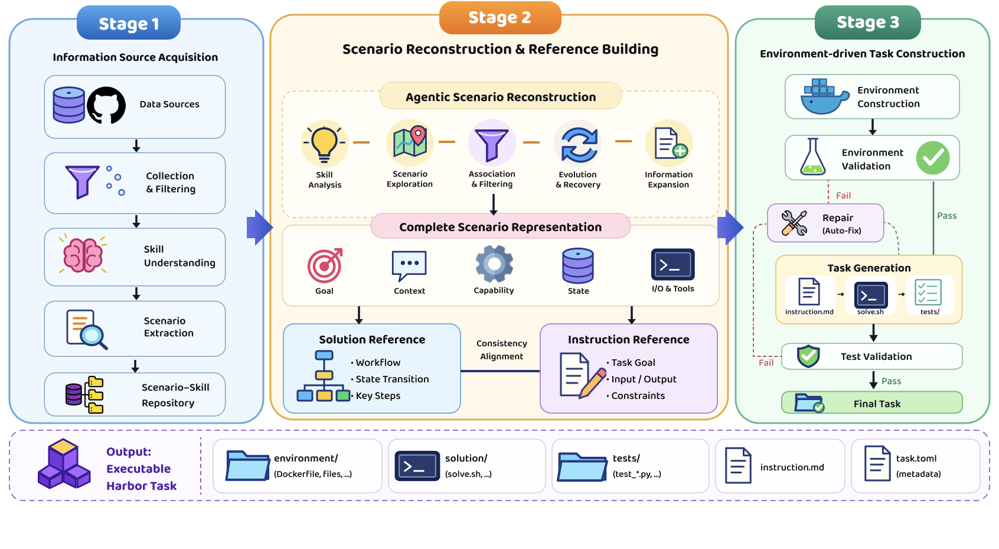

01Acquire
Information source acquisition
Collect, filter, and understand reusable agent skills, then organize them into a scenario–skill repository.
71K+ valid skillsScenario extraction
Fine-grained Agentic Construction of Executable Tasks
Preserving Source Intent and Executable State in Terminal Task Synthesis
University of Science and Technology of China · Shanghai AI Laboratory · Fudan University
stokou@mail.ustc.edu.cn · * Corresponding author
$ facet build --grounded
The central idea
A terminal task couples an instruction, environment, solution, and verifier. One mismatch can invalidate the whole task.
FACET preserves source knowledge and grounds every artifact in the same realized environment.
Pipeline
Three stages. One continuous information path.
Collect, filter, and understand reusable agent skills, then organize them into a scenario–skill repository.
Recover goals, dependencies, intermediate states, tools, and I/O contracts before building aligned instruction and solution references.
Realize the environment first, ground every artifact in the same container state, and repair only the component that fails.

Shared grounding interface
Environment changes are not hidden in a textual handoff. Files, paths, ports, packages, schemas, and fixtures are visible to each generator in sequence.
Terminal-Bench 2.1
Fine-tuning with only 1.2K successful trajectories.
The 27B model reaches 47.57—within 1.49 points of Qwen3.5-397B under the same evaluation setting, at roughly 1/15 the model size.
Open releases
6,020 public-release tasks and three fine-tuned Qwen3.5 checkpoints.
Generation analysis
The forward order—environment, instruction, solution, then solution-aware verifier—reaches an 83% final yield, compared with 63% for reverse and 65% for joint generation.
Appendix highlights
Compact comparisons from the paper and appendix.
Same Terminus-2 scaffold. P@k in percent.
| Dataset | Trajectory | Task | ||||
|---|---|---|---|---|---|---|
| # Traj. | Turns | # Tasks | Tests | P@1 | P@3 | |
| Nemotron-Terminal | 5K | 6.12 | 15K | 6.18 | 40.67 | 48.00 |
| Endless-Terminals | 200 | 4.53 | 2,492 | 5.51 | 83.00 | 87.00 |
| Terminal-Lego | 32K | 5.77 | 15K | 16.60 | 47.00 | 49.00 |
| TerminalWorld | 200 | 11.94 | 1,530 | 3.98 | 57.00 | 82.00 |
| Tmax | 500 | 11.14 | 15K | 3.29 | 80.00 | 86.00 |
| FACET (ours) | 1.2K | 11.86 | 6,078 | 22.77 | 27.00 | 35.00 |
| Model | Size | Base | FACET | Δ |
|---|---|---|---|---|
| Qwen3.5-4B | 4B | 17.60 | 24.72 | +7.12 |
| Qwen3.5-9B | 9B | 27.34 | 35.58 | +8.24 |
| Qwen3.5-27B | 27B | 40.82 | 47.57 | +6.75 |
| Qwen3.5-397B-A17B | 397B | 49.06 | — | reference |
| Scheme | Validated | Initial | Final yield |
|---|---|---|---|
| Forward | 99 | 46.5% | 83/100 |
| Joint | 96 | 37.5% | 65/100 |
| Reverse | 91 | 24.2% | 63/100 |
| Stage | Count | Retention |
|---|---|---|
| Scenario–skill seeds | 7,852 | — |
| Successful environments | 7,504 | 95.70% |
| First-pass valid tasks | 2,856 | 38.35% |
| Final validated tasks | 6,078 | 81.63% |
| Statistic | Value |
|---|---|
| Observation commands | 84.7% |
| Observation-only first turn | 95.6% |
| Action → observation | 53.1% |
| Top ten commands | 88.4% |
Citation
FACET is available as arXiv:2608.18580.
@misc{shi2026facet,
title = {{FACET}: Preserving Source Intent and Executable
State in Terminal Task Synthesis},
author = {Kou Shi and Zun Wang and Qisheng Su and
Shiting Huang and Ziao Zhang and Zhen Fang and
Qingnan Ren and Jin Liu and Yu Zeng and
Yiming Zhao and Lin Chen and Zehui Chen and Feng Zhao},
year = {2026},
eprint = {2608.18580},
archivePrefix = {arXiv},
primaryClass = {cs.AI},
url = {https://arxiv.org/abs/2608.18580}
}